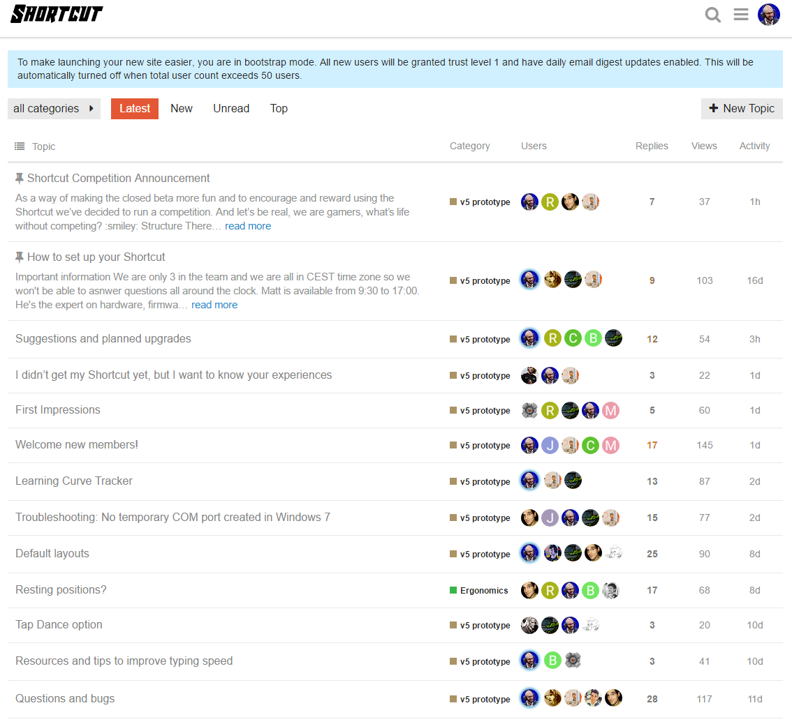
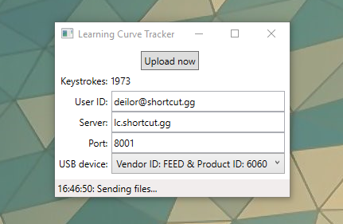
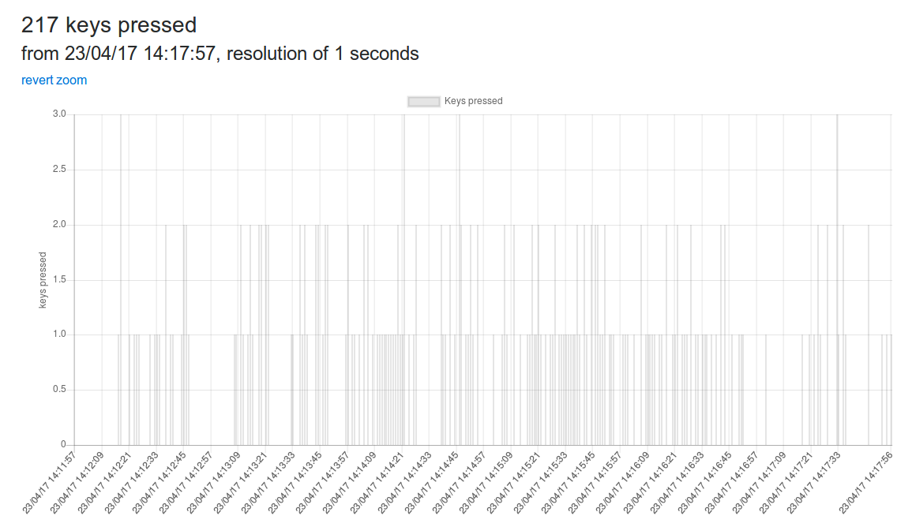
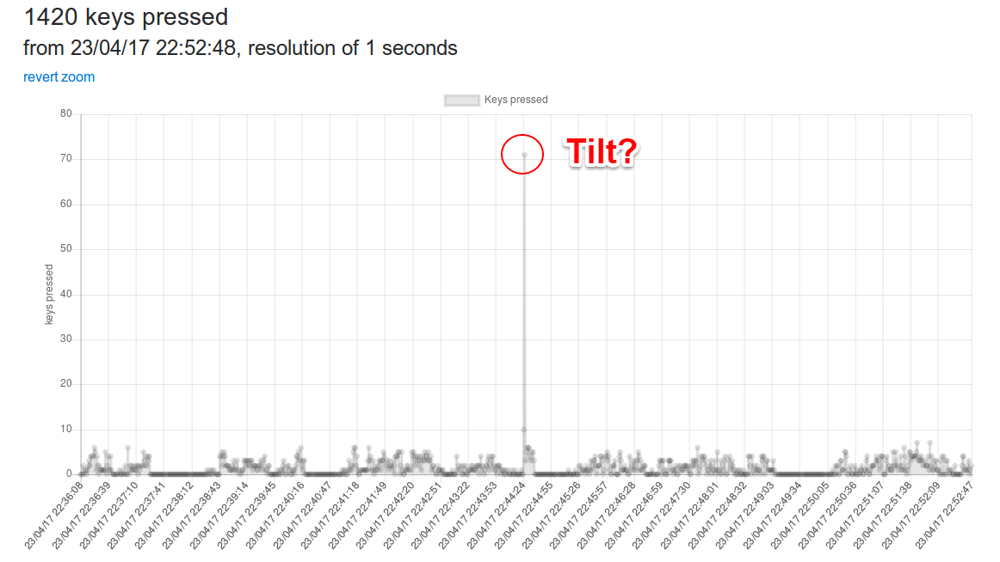
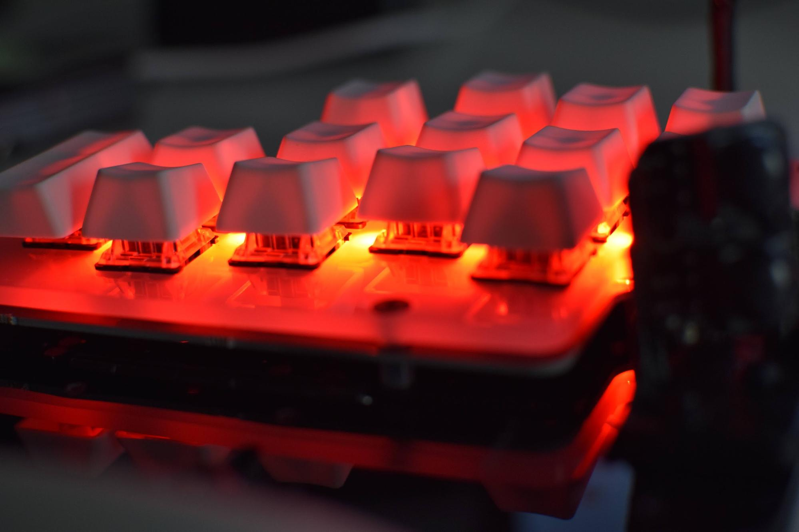

The last two weeks have been really different to the previous month. During the previous month we were a mini keyboard factory and for the last two weeks we’ve been able to focus more on “office work”. Although during the last week we assembled the last few prototypes, there’s been two big topics we’ve been working on: ergonomics documentation and getting the closed beta rolling.
Although most of what we’ve done it’s still in the works, the first result of our documentation process was last week's ergonomy blog post. Over half a year ago our research on how to make a keyboard that’s less taxing for the body started, but recently we started making this information more “friendly”. This is something that many people would consider “boring information” but we consider it important to make this information accessible to everyone - even though it means going through countless studies to get the pearls of wisdom.
During the following weeks we’ll post more articles explaining how and why the Shortcut is better than a regular keyboard for health and how it affects performance.
Closed beta
We aren’t accepting any more beta testers. Some of the PCBs that came from China weren’t properly packed and got too damaged to use, and the rest have been sold. The best thing about not having to assemble more prototypes is that finally we can focus on the closed beta.
Setting up and maintaining the forum is time consuming but rewarding. I’m happy that our prototypes are in hands of testers and we are working towards improving the product. Not all keyboards have arrived and not all testers have registered but we are already having some interesting activity.

Two days ago we announced in the forum that we will be running the Shortcut Competition, consisting of a month long League and a weekly 1 vs 1 single elimination tournament. We expect to spice up the beta and while doing so we are also working on one of our main goals, discovering how fast our testers adapt to the Shortcut.
To be able to track the testers improvement we’ve developed a little application to track key presses and releases, the Learning Curve Tracker or LCT.

The LCT only registers when a key is pressed and released, not what key is pressed so we can’t know what people are typing but with enough data and time, we can know how fast they are improving and if they are typing or gaming. All data points (key presses and releases) are timestamped so we can easily visualize the data.

Data of one of our users learning how to type
We recently started visualizing and analyzing data but we’ve already seen different patterns for typing and gaming. Typing is more steady while gaming has frequent spikes where keys are being smashed or not pressed at all. We’ve even encountered a graph where we think one of our users tilted! :D

71 keys pressed in one second. Is this what tilt is made of?
Matt is doing an awesome job with the data and we hope soon we’ll be able to share with you more graphs and interesting conclusions.
To close the post, two weeks ago one of our testers made some really cool pictures and posted it on Reddit. I recommend you to check the thread, I answered a few questions there and the pics are worth it alone. We like them so much that we’ve been using them in our social media and for this blog post :D

The SMT Leds look pretty cool!